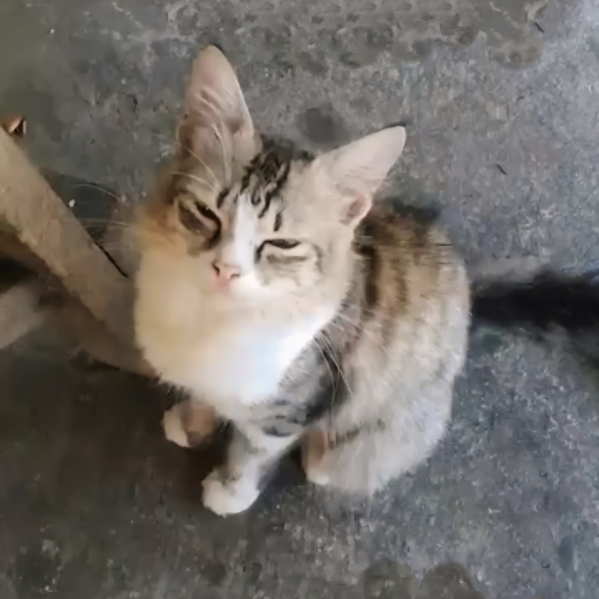
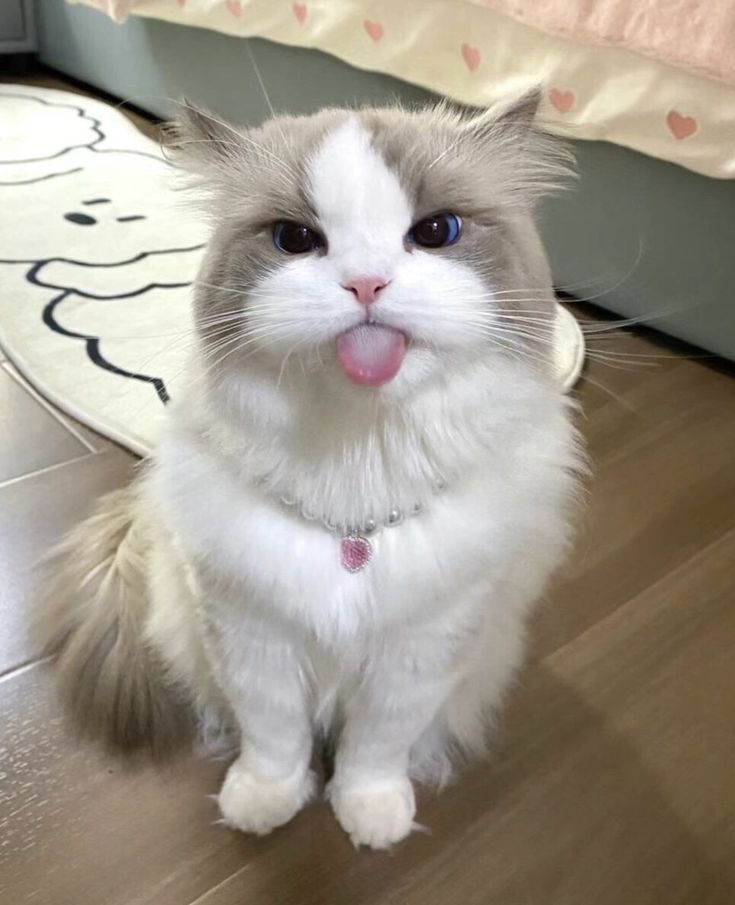
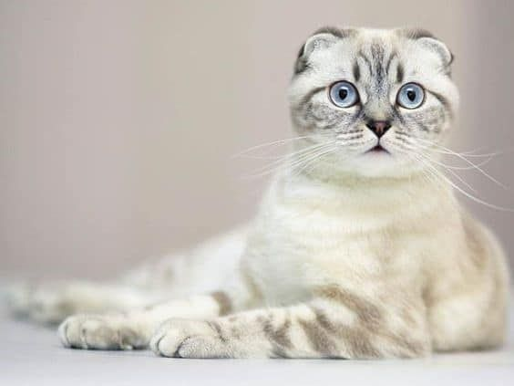
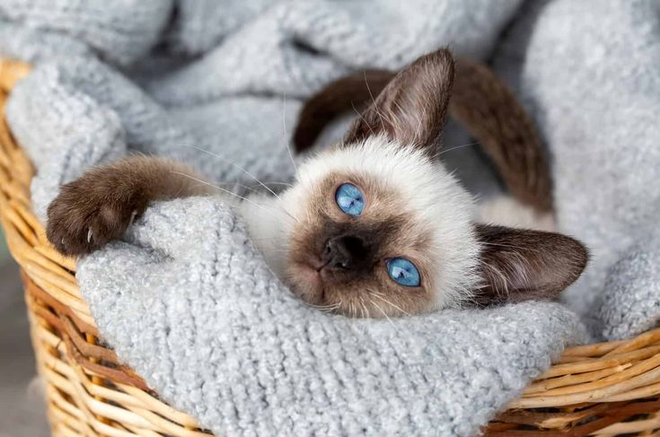
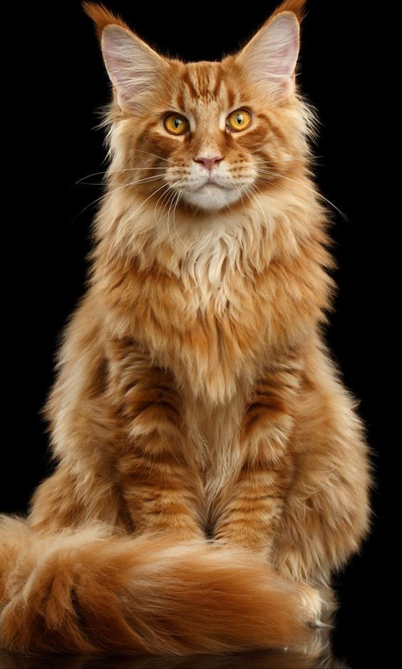
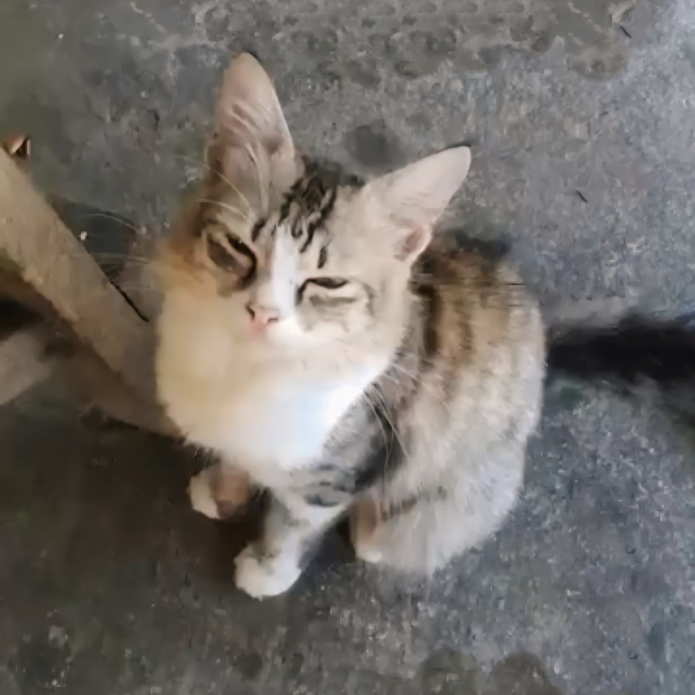
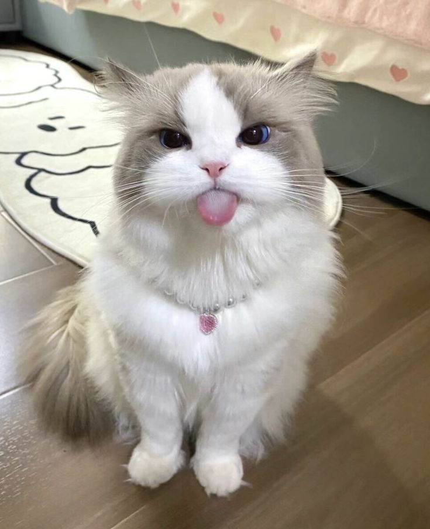
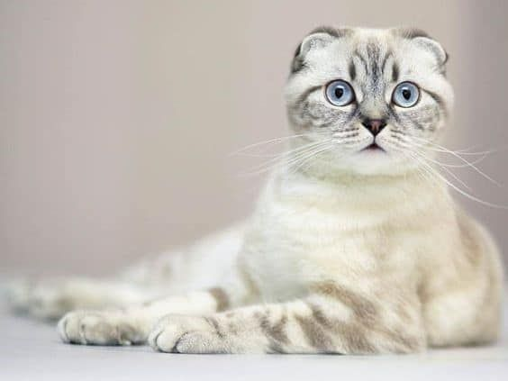
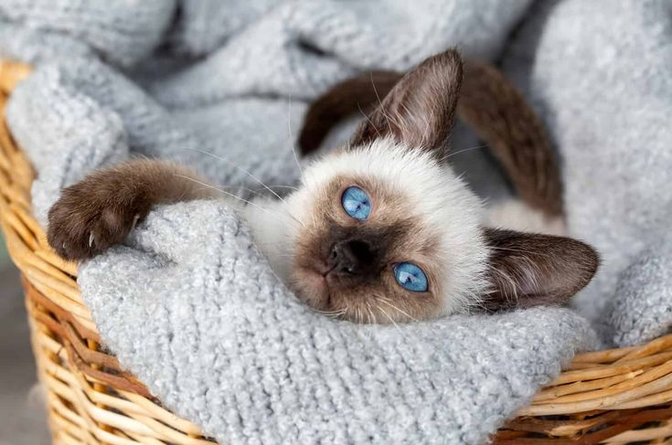
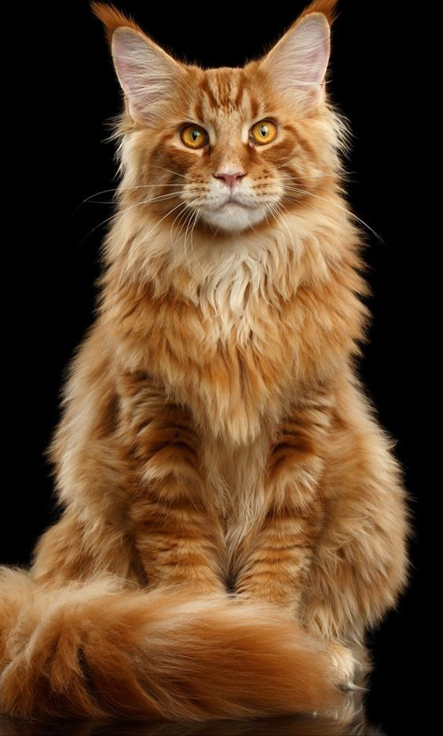

Sayangi Kucing Kita
- Merawat Kucing Kita
Kucing kita sehat, kita jadi tenang
- Saat memelihara kucing kita bukan hanya saja mengajak mereka bermain, tetapi juga perlu melakukan perawatan yang rutin supaya mereka tetap dalam keadaan sehat. Karena kucing memiliki sifat yang lincah dan penasaran terkadang kita kurang waspada yang menyebabkan mereka terluka atau sakit. Apalagi kucing kita itu merupakan kucing rumahan, mereka perlu diperhatikan pada beberapa hal dalam keseharian mereka, terutama pada anak kucing yang kalian baru akan merawatnya, harap hati-hati dan lebih peka ya pada apa yang mereka rasakan, pada respon yang mereka berikan. Nah untuk itu kita mempunyai
- Tips merawat anak kucing saat kalian baru membawanya ke rumah:
 









Kucing kita bahagia, kita ikut bahagia
Wah ternyata cukup banyak ya manfaat yang baik bagi kucing peliharan kita.
Jangan lupa ya untuk bermain dengan mereka hari ini!!
Jangan lupa ya untuk bermain dengan mereka hari ini!!